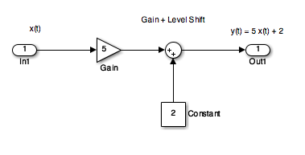
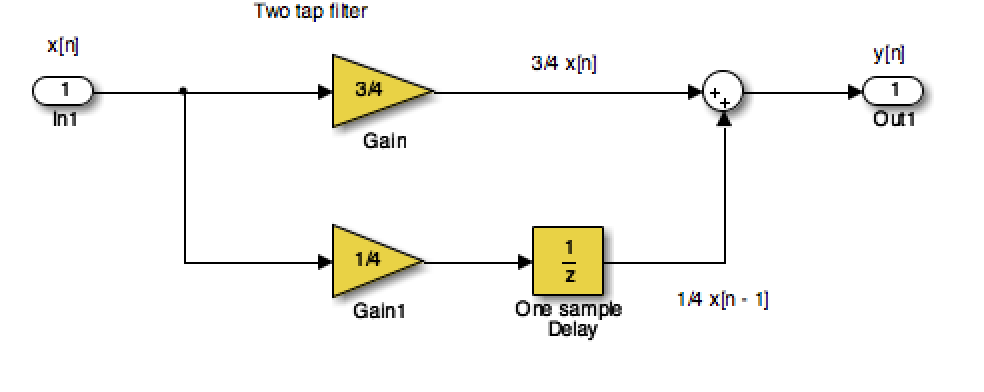

Worksheet 1
To accompany Chapter 1 Introduction
We will step through this worksheet in class.
This give us an opportunity to demonstrate the electronic resources, Canvas, OneNote, Pingo, MATLAB, Simulink and Wolfram Alpha, that we will use to make our time in class more active and enaging. We will also test your background knowledge coming into the module.
Sinusoidal signals (e.g. AC) are pretty fundamental in electrical engineering. The mathematical model of a sinusoidal signal is:
$$x(t) = A \cos (2\pi f_0 t - \phi).$$Without talking to your anyone, which of the following symbols do you think represents the period of the signal in seconds?
| Symbol |
|---|
| $A$ |
| $f_0$ |
| $1/f$ |
| $\frac{2\pi}{f_0}$ |
| $\phi$ |
Wolfram Alpha
Here's the link: http://www.wolframalpha.com
Paste this into the search box
plot 3 cos(2 pi 2 t - 3 pi/4)
The lecturer will change the numbers in class. Note what happens and try to gain insight.
%Make sure that we have a clean workspace
clear all
format compact
Define t
t = linspace(0, 1, 100);
Define x
x = 3 * cos(2*pi*2*t - 3*pi/4);
Plot result, and label plot
plot(t,x)
title('A Sinusoidal Signal')
xlabel('Time t (s)')
ylabel('Amplitude')
grid
If you want to execute this in MATLAB, you can create a file.
%%file sinewave.m
% SINEWAVE - plot function $x(t) = 3 \cos(2\pi t - 3 \pi/4)$ for $t = 0\ldots 1$
%% Set up the problem
% define t
t = linspace(0, 1, 100);
% define x
x = 3 * cos(2*pi*2*t - 3*pi/4);
%% Plot result and label plot
plot(t,x)
title('A Sinusoidal Signal')
xlabel('Time t (s)')
ylabel('Amplitude')
grid
To run this script, just type the filename withount the .m extension.
sinewave
Next time you have access to MATLAB, download this script and adjust the values of the numerical constants and see what additional insights you gain about the meaning of the variables $A$, $f_0$, $2\pi f_0$, and $\phi$.
Returning to the Question
Sinusoidal signals (e.g. AC) are pretty fundamental in electrical engineering. The mathematical model of a sinusoidal signal is:
$$x(t) = A \cos (2\pi f_0 t - \phi).$$Using the insight just gained by exploring this function with a computer, try matching each of the symbols to its definition again.
| Symbol |
|---|
| $A$ |
| $f_0$ |
| $1/f$ |
| $\frac{2\pi}{f_0}$ |
| $\phi$ |
This time you may discuss with your neighbours!!
Notes
- In communications and electronic signal processing, the frequency of sinusoidal signals us usually given in cycles per second or Hz.
- In mathematics, the frequency is always expressed in radians per second.
- In some courses, including later in this one and in EG-243 Control Systems, the frequency $2\pi f_0$ is often called the natural frequency and is usually written $\omega_n$.
Try This Yourself
- Use any or all of computing tools that you have access to to explore other sinusoids. Change the values of the variables and explain what happens.
- Try adding sinusoids of different amplitudes and different frequencies together and see what happens.
- Change
costosinand see what happens.
Block diagram model in Simulink

The Similink code can be downloaded from this file gain_level_shift.slx.
open gain_level_shift
Discrete-time Signals
Disrete-time signals are a function of a time index $n$. A discrete-time signal $x[n]$, unlike a continuous-time signal $x(t)$, is only defined at integer values of the independent variable $n$. This means that the signal is only active at specific periods of time. Discrete-time signals can be stored in computer memory.
MATLAB run
Define function and save as y.m.
%%file y.m
% Define the function
function [ y ] = x( n )
if n < 0 | n >= 10
y = 0;
else
y = 5;
end
end
open y
%% Define sample points
n = -15:18;
%% Make space for the signal
xn = zeros(size(n));
%% Compute the signal x[n]
for i = 1:length(xn)
xn(i) = y(n(i));
end
%% Plot the result
stem(n,xn)
axis([-15, 18, 0, 6])
title('Stem Plot for a Discrete Signal')
xlabel('Sample n')
ylabel('Signal x[n]')
grid
Exercise 1
Draw a digital signal that represents your student number in some way. For example if your number was 765443, then you could generate a signal for which $x[n] = 0$ when $n < 7$, then $x[n] = 7$ for $7$ periods, then $x[n] = 6$ for the next 6 periods, $x[n] = 5$ for 5 periods, and so on. The signal should return to 0 when the last digit has been transmitted.
Sketch your signal here:
To plot this on a computer you would need to transcribe $x[n]$ into an array and then use the stem plot to plot the data. You could just create the array by hand, but you could also create a MATLAB function if you would like a challenge.
The term tap denotes that output at time instant $n$ is formed from two time instants of the input, $n$ and $n – 1$. Check out a block diagram of a two-tap filter system:

This system is available as a Simulink model discrete_system.slx
open discrete_system
In words, this system scales the present input by 3/4 and adds it to the past value of the input scaled by 1/4. The notion of the past input comes about because $x[n - 1]$ is lagging one sample value behind $x[n]$. The term filter describes the output as an averaging of the present input and the previous input. Averaging is a form of filtering.
The sinusoidal signal we saw earlier is periodic because of the $\mod 2\pi$ property of cosines. The signal of the sinusoid has period 0.5 seconds (s), which turns out to be the reciprocal of the frequency $1/f_0$ Hz.
%% A Periodic signal (square wave)
t = linspace(0, 1, 500);
x = square(2 * pi * 5 * t);
This Square wave is a 5 Hz waveform sampled at 500 Hz for 1 second
plot(t, x);
ylim([-2, 2]);
grid()
title('A Periodic Signal')
xlabel('Time t (s)')
ylabel('Amplitude')
What is the period $T$ in milliseconds?
Write your answer here
%% An aperiodic function
tau = 1;
x = linspace(-1,5,1000);
y = rectangularPulse(0,tau,x);
plot(x,y)
ylim([-0.2,1.2])
grid
title('An Aperiodic Signal')
xlabel('Time t (s)')
ylabel('Amplitude')
%% Plot a Random Signal
plot(0.5 + 0.25 * rand(100,1))
ylim([0,1])
grid
title('Random Signal')
xlabel('Time t (s)')
ylabel('Amplitude')
Domains for Signals and Systems
Most of the signals we encounter on a daily basis reside in the time domain. They’re functions of independent variable $t$ or $n$. But sometimes when you’re working with continuous-time signals, you may need to transform away from the time domain ($t$) to another domain.
Other Domains you will encounter
The most commonly used domains used when analysing continuous time signals are the frequency domain ($f$ or $\omega$) and the Laplace $s$-domain ($s$).
Similarly, for discrete-time signals, you may need to transform from the discrete-time domain ($n$) to the frequency domain ($\hat{\omega}$) or the z-domain ($z$).
This section briefly introduces the world of signals and systems in the frequency, s-, and z-domains. More on these domains will follow.
Systems, continuous and discrete, can also be transformed to the frequency and s- and z-domains, respectively. Signals can, in fact, be passed through systems in these alternative domains. When a signal is passed through a system in the frequency domain, for example, the frequency domain output signal can later be returned to the time domain and appear just as if the time- domain version of the system operated on the signal in the time domain.
Consider the sum of a two-sinusoids signal $$x(t) = \underbrace {A_1\cos(2\pi f_1 t)}_{s_1} + \underbrace {A_2\cos(2\pi f_2 t)}_{s_2}$$
%%file two_sines.m
%... plot two sinusoids signal
A1 = 2; f1 = 1;
A2 = 1.5;f2 = 2.2;
t = linspace(0, 3*(1/f1), 1000);
s1 = A1*cos(2*pi*f1*t);
s2 = A2*cos(2*pi*f2*t);
subplot(4,1,1)
plot(t,s1),ylim([-5,5]),xlabel('Time t (s) '),ylabel('s1')
subplot(4,1,2)
plot(t,s2),ylim([-5,5]),xlabel('Time t (s) '),ylabel('s2')
subplot(4,1,3)
plot(t,s1+s2),ylim([-5,5]),xlabel('Time t (s) '),ylabel('x(t) = s2 + s2')
subplot(4,1,4)
axis([0,4,0,2.5])
arrow([f1,0],[f1,A1]),text(f1,A1+0.2,'A1'),text(f1+0.05,0.2,'f1')
arrow([f2,0],[f2,A2]),text(f2,A2+0.2,'A2'),text(f2+0.05,0.2,'f2')
ylabel('Frequency Spectrum X(f)'),xlabel('Frequency (Hz)')
two_sines
Challenge
I used the examples from Signals and Systems for Dummies to seed this Padlet collection Examples of Signals and Systems.
Can you add to it?
Problem
Think about the effect on this signal of applying the following basic signal operations:
- $2 f(t)$
- $0.5 f(t)$
- $f(2t)$
- $f(0.5 t)$
- $-f(t)$
- $f(-t)$
- $-f(-t)$
- $f(t - 1)$
- $f(t + 1)$
- $-2f(-t+2)$
We will work through these after the break together then you will do some exercises based on Chapter 1 of Karris.
What do you think of Pingo so far? Please give a one word or short sentence answer.
-> Stop recording